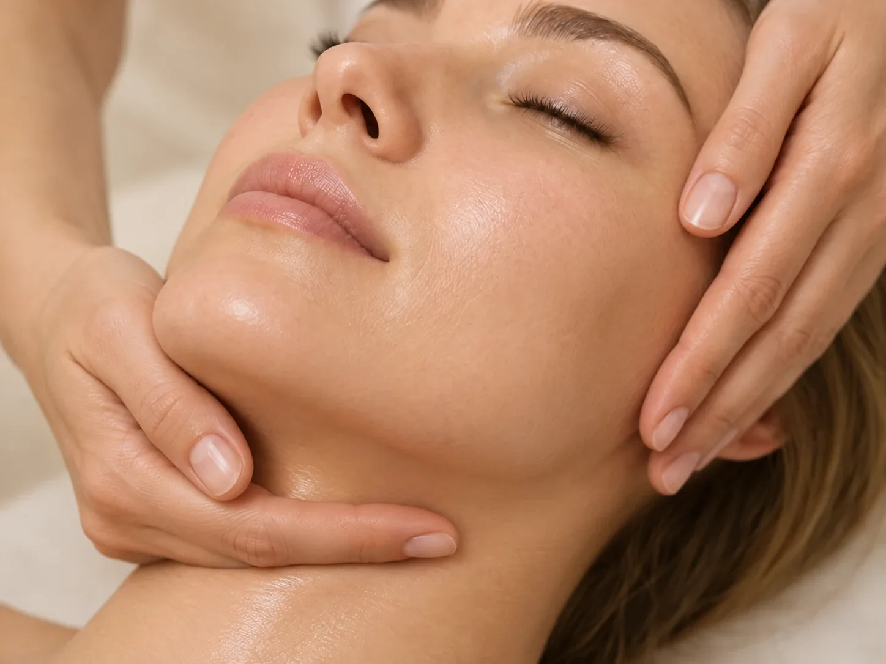

Кожа и внешность
Массаж лица
Косметический массаж лица, шеи и декольте с очищением и маской по типу кожи.
Процедура длится 60 минут: очищение, массаж и маска, подобранная по типу кожи.
- Время
- 60 мин
- Стоимость
- 5 000 ₽
- Входит
- очищение, массаж, маска

Кому подходит
Массаж лица – уходовая процедура для кожи и мышц лица, шеи и декольте. В клинике 8.0.8 в Москве, у метро «Римская», это косметический массаж лица: очищение, массаж и маска по типу кожи за 60 минут. Записаться можно ежедневно с 9:00 до 21:00.
Массаж лица выбирают при отёчности и ощущении «зажатого» лица, тусклом цвете кожи, а также как регулярный уход. Его делают и просто для того, чтобы отдохнуть и снять напряжение после рабочей недели.
Перед процедурой специалист уточнит тип кожи, задачу и противопоказания. Если по состоянию кожи нужен врач, подскажет записаться к косметологу клиники.
Что входит
- Косметический массаж лицаОчищение лица, шеи и декольте, массаж и маска по типу кожи. Длительность 60 минут.
- Альгинатная лифтинг-маскаДополнение к массажу или уходу. Длительность 60 минут.
- ОтёчностьОтёки по утрам, тяжесть в лице.
- Напряжение мышц лицаОщущение «зажатого» лица, привычка хмуриться или сжимать челюсть.
- Тусклый цвет кожиУставший вид, сероватый оттенок.
- Сухость и стянутостьМаску подбирают по типу и состоянию кожи.
- Регулярный уходЛицо, шея и декольте за один визит.
- Перед событиемКогда хочется освежить лицо без инъекций и восстановительного периода.
- Отдых и расслаблениеСпокойный час, когда нужно снять напряжение после рабочей недели.
Противопоказания
- Воспаления на кожеГнойничковые высыпания, акне в стадии обострения.
- ГерпесПока есть высыпания.
- Повреждения кожиРаны, ссадины, раздражение, свежий солнечный ожог.
- После инъекционных процедурСроки после ботулинотерапии, контурной пластики и других инъекций уточнит врач.
- Температура и острые инфекцииПроцедуру переносят.
- Обострение кожных заболеванийНапример, дерматита или розацеа.
- Полный списокПротивопоказания уточнит специалист перед процедурой, а при сомнениях врач-косметолог.
Как проходит процедура
- ОценкаТип кожи, задача и противопоказания.
- ОчищениеЛицо, шея, декольте.
- МассажМассаж лица, шеи и декольте. Интенсивность подбирают по ощущениям.
- МаскаМаска по типу кожи. По желанию можно добавить альгинатную лифтинг-маску.
- РекомендацииКак часто повторять и какой уход подходит вашей коже.
Как подготовиться
- Расскажите о процедурахОсобенно об инъекциях, пилингах и чистках за последний месяц.
- МакияжМожно прийти с макияжем: очищение входит в процедуру.
- АллергииСообщите, если на какую-то косметику была реакция.
- Состояние кожиЕсли сейчас есть воспаления, герпес или раздражение, лучше перенести визит: позвоните администратору.
- Время послеЛучше не планировать плотный макияж сразу после массажа.
После процедуры
После процедуры специалист расскажет:
- как часто повторять массаж
- какой уход подходит вашей коже
- можно ли сочетать массаж с другими процедурами
Какой массаж лица есть в клинике
Массаж лица называют по-разному: классический, косметический, пластический, миофасциальный, лимфодренажный. Это разные техники и разные задачи: одни больше работают с отёками, другие с напряжением мышц, третьи с тонусом кожи.
В прайсе клиники одна процедура массажа лица: косметический массаж. Он включает очищение лица, шеи и декольте, массаж и маску по типу кожи. Технику и интенсивность специалист подбирает по коже и задаче. Если вы ищете конкретную технику, уточните у администратора при записи, проводят ли её.
Массаж лица не лечит заболевания кожи. Если беспокоят акне, пигментация или сосудистые изменения, начните с приёма врача-косметолога: он подберёт лечение, а массаж станет частью ухода.
Если нужен массаж головы и шеи, а не лица, подойдёт медицинский массаж шейно-воротниковой зоны с волосистой частью головы (30 минут, 3 000 ₽).
Альгинатная маска
Альгинаты получают из бурых водорослей. Порошок смешивают с водой и наносят на лицо. Через несколько минут маска застывает плотным эластичным слоем и снимается целиком.
Альгинатную маску делают для увлажнения кожи и ощущения подтянутости. В клинике её можно добавить к массажу лица.
Как часто делать массаж лица
Один массаж освежает лицо, но для заметного эффекта его обычно делают курсом. Сколько процедур и с каким интервалом, специалист предложит по состоянию кожи. Стоимость курса уточнит администратор.
Между процедурами помогает домашний уход: очищение, увлажнение и защита от солнца по типу кожи. Что подойдёт именно вам, специалист подскажет после массажа.
Массаж хорошо сочетается с другими уходами. Порядок процедур с чисткой лица, пилингами и инъекциями лучше обсудить с врачом-косметологом: после некоторых процедур массаж откладывают.
Стоимость
Выполнение косметического массажа (очищение лица, шеи, декольте, массаж с использованием маски по типу кожи)
5 000 ₽
60 мин
ЗаписатьсяВопросы
Сколько стоит массаж лица?
Косметический массаж лица, шеи и декольте с очищением и маской стоит 5 000 ₽ и длится 60 минут. Альгинатная лифтинг-маска стоит 2 000 ₽.
Как записаться на массаж лица?
Позвоните по телефону +7 (938) 099-30-09 или нажмите «Записаться» на этой странице: администратор подберёт удобное время и подскажет, как подготовиться. Клиника работает ежедневно с 9:00 до 21:00.
Где сделать массаж лица в Москве?
В клинике 8.0.8: ул. Сергия Радонежского, 15–17, стр. 2, этаж 1. Рядом станции метро «Римская» и «Площадь Ильича».
Сколько длится массаж лица?
Массаж длится 60 минут вместе с очищением и маской.
Как часто делать массаж лица?
Обычно курсом, частоту подскажет специалист.
Делаете ли пластический или миофасциальный массаж лица?
В прайсе клиники одна процедура: косметический массаж лица. Проводят ли нужную вам технику, уточните у администратора при записи.
Что входит в массаж лица?
Очищение лица, шеи и декольте, массаж этих зон и маска по типу кожи.
Можно ли сделать массаж лица после уколов?
Не сразу. Сроки после ботулинотерапии, контурной пластики и других инъекций скажет врач-косметолог.
Можно ли массаж лица при куперозе?
Зависит от выраженности. Специалист оценит кожу и подберёт мягкую технику или предложит сначала консультацию врача-косметолога.
Есть ли противопоказания?
Да: воспаления и высыпания на коже, герпес, повреждения кожи, температура, обострение кожных заболеваний. Специалист проверит их перед процедурой.
Как добраться
- АдресМосква, ул. Сергия Радонежского, 15–17, стр. 2, этаж 1
- Метро«Римская» и «Площадь Ильича»
- Часы работыЕжедневно с 9:00 до 21:00
- Телефон+7 (938) 099-30-09


Имеются противопоказания. Необходима консультация специалиста.